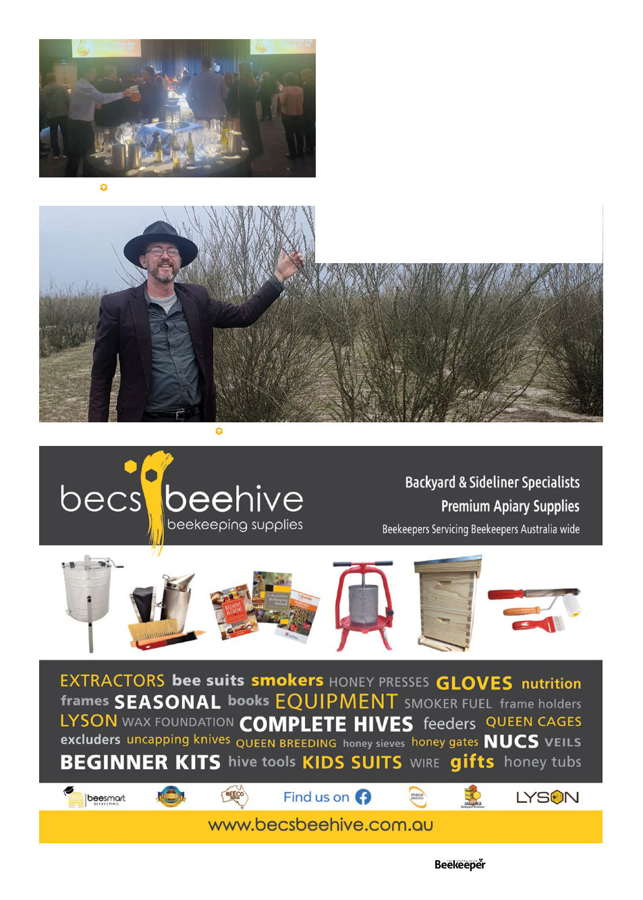

The author with some L nitens manuka plants.
WA conference closing banquet
From the stage, there were excellent presentations
from a variety of scientists updating us about their
research. An interesting talk by Tim Jackson, CEO of the
Almond Board Australia hinted at the development of
self-pollinating almonds.
Keynote speakers from New Zealand, Jason Marshall
- commercial beekeeper and Rae Butler - VSH queen
breeder told their stories of adjusting to life after Varroa.
Their messages were inspirational, highlighting that it is
possible for businesses to thrive with this latest pest.
And thus “conference season” more or less comes to
an end, though the Queensland conference is still ahead,
though I won’t be there. Now it’s time to catch up on this
magazine issue and get stuck in to my new job!
Vol. 126 | No. 01 |
Celebrating 125 years | 23